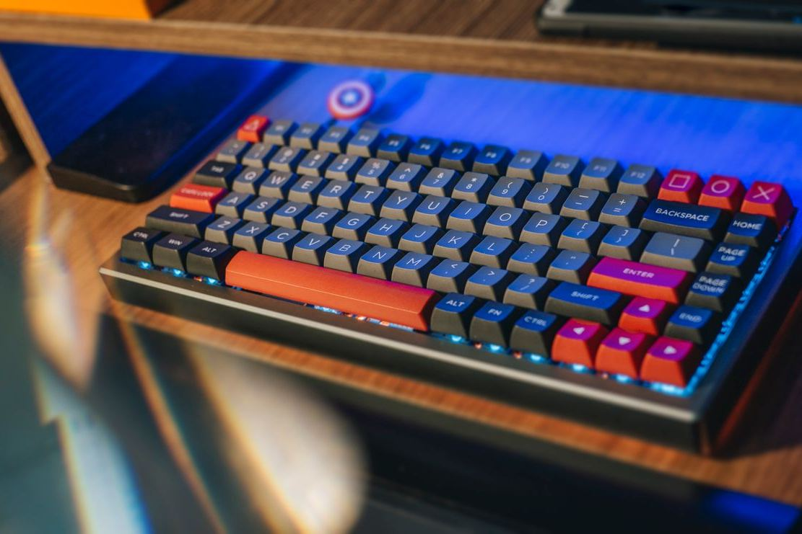

Best Ergonomic Keyboards for Coders & Writers (2026): Split, Low-Profile & Mechanical
For long typing days, layout and posture matter as much as switches. A split or curved keyboard lets your wrists stay straight instead of bending outward, a low profile or a wrist rest keeps them from bending upward, and a compact layout keeps your mouse closer. This guide covers one keyboard for each of those approaches, all sold on Amazon US, with specs and independent reviews.
Quick picks
| Product | Best for | |
|---|---|---|
| Logitech Ergo K860 | Best ergonomic keyboard for most people | Check price |
| Kinesis Freestyle2 | Fully split on a budget | Check price |
| Keychron Q1 Pro | Premium mechanical typing feel | Check price |
| Logitech MX Mechanical | Low-profile mechanical for office work | Check price |
How to choose
1. Split or curved to keep wrists straight
On a standard keyboard your hands angle outward at the wrist. A curved split layout like the Ergo K860, or a fully split board like the Freestyle2, lets your forearms point straight at the keys. Expect a week or two of adjustment.
2. Low profile or a wrist rest
Tall keyboards push your wrists upward. Either choose a low-profile board like the MX Mechanical, use one with a built-in palm rest like the K860, or add a separate wrist rest.
3. Smaller layouts keep your mouse closer
A 75% or tenkeyless board shortens the reach to your mouse, which can ease shoulder strain. Full-size boards with a number pad push the mouse further out.
4. Mechanical or membrane
Mechanical switches give a crisper, more consistent feel and usually last longer; membrane and scissor keys are quieter and lighter. Neither is more ergonomic in itself; layout matters more.
5. Get the keyboard height right first
The best keyboard won't help if it's too high. Your keyboard should be at relaxed elbow height; use our calculator, and see our keyboard tray guide if your desk is too high.
Specs side by side
| Product | Layout | Switches | Connection | Power | Price tier |
|---|---|---|---|---|---|
| Logitech Ergo K860 | Curved split, full size with number pad | Non-mechanical (low-travel) | Bluetooth or USB receiver | 2× AAA (about 2 years) | Mid-range |
| Kinesis Freestyle2 | Fully split, up to 9 in apart | Membrane, low force (about 45 g) | Wired USB (Bluetooth "Blue" version sold separately) | USB-powered (wired model) | Budget |
| Keychron Q1 Pro | 75% (no number pad) | Mechanical, hot-swappable | Bluetooth or USB-C wired | Rechargeable | Premium |
| Logitech MX Mechanical | Full size (Mini version available) | Low-profile mechanical (3 types) | Bluetooth or Logi Bolt receiver | Rechargeable 1500 mAh, USB-C | Mid-range |
From manufacturer pages, listings and reviews; see the sources under each keyboard. Confirm the switch type and layout on the listing.
The shortlist
Best ergonomic keyboard for most people
1. Logitech Ergo K860
The K860 is the best-selling ergonomic keyboard on Amazon: a curved, split key layout with a three-layer pillowed palm rest and front legs that tilt the keyboard away from you, which helps keep wrists straight. It runs for about two years on two AAA batteries and connects over Bluetooth or a USB receiver. Reviewers rate it very comfortable; the main criticism is that its split angle is fairly gentle.
What we like
- Built-in cushioned palm rest
- Negative tilt option for standing desks
- Long battery life
Trade-offs
- Gentle split angle
- Large footprint with the number pad
What other reviewers found
- Digital Trends: called it a supremely comfortable ergonomic keyboard.
- TechRadar: described it as sturdy and thoughtfully designed, highlighting the wrist rest and tilt legs.
- PC Gamer: called it a reasonable entry point into ergonomic keyboards, though it wanted a steeper split angle.
Skip it if: You want mechanical switches or a compact board.
Check Logitech Ergo K860 on Amazon →Spec sources (checked Nov 2, 2026): B&H spec
Fully split on a budget
2. Kinesis Freestyle2
The Freestyle2 splits into two halves joined by a cable, so you can set each hand at the width of your shoulders. The standard model separates up to 9 in (a 20 in version is sold separately), and the VIP3 kit adds 5°, 10° or 15° of tenting. Its quiet, low-force membrane keys aren't mechanical. The standard model is wired; a Bluetooth version, the Freestyle2 Blue, is sold separately.
What we like
- True split for shoulder-width typing
- Optional tenting (VIP3)
- Light, quiet keys
Trade-offs
- Not mechanical
- 9 in cable limits separation on the standard model
Skip it if: You want mechanical switches.
Check Kinesis Freestyle2 on Amazon →Spec sources (checked Nov 2, 2026): Kinesis Freestyle2 (ErgoCanada), Freestyle2 with VIP3 (Best Buy)
Premium mechanical typing feel
3. Keychron Q1 Pro
An aluminum 75% mechanical keyboard with hot-swappable switches, QMK/VIA remapping and Bluetooth or wired connection. It's a favorite of programmers who want layers and macros, and its compact layout keeps the mouse close. It's tall and heavy, so plan on a wrist rest.
What we like
- Solid aluminum build
- Hot-swap switches, QMK/VIA remapping
- Compact 75% layout
Trade-offs
- Tall: needs a wrist rest
- Not split; heavy to carry
Skip it if: You want a split layout or carry your keyboard around.
Check Keychron Q1 Pro on Amazon →Spec sources (checked Nov 2, 2026): Amazon listing
Low-profile mechanical for office work
4. Logitech MX Mechanical
A low-profile mechanical keyboard with tactile, linear or clicky switches, smart backlighting and switching between up to three devices. The low height keeps wrists flatter than standard mechanical boards. Logitech rates the battery at up to 15 days with backlighting, or about 10 months without.
What we like
- Low profile, flatter wrists
- Switches between 3 devices
- Quiet tactile option
Trade-offs
- Not hot-swappable
- Pricier than standard office keyboards
What other reviewers found
- SlashGear: rated it 8/10 after long-term testing, citing quiet, responsive switches.
Skip it if: You want deep customization or a split layout.
Check Logitech MX Mechanical on Amazon →Why some keyboards aren't here
Earlier versions of this guide included the NuPhy Air75 V2 and the Kinesis Freestyle Pro. The Air75 V2 wasn't showing a price on Amazon US when we checked and its successor had mixed ratings, and the Freestyle2 is far more widely bought than the Freestyle Pro, so we swapped them. We added the Logitech Ergo K860, the most popular ergonomic keyboard on Amazon US.
FAQ
Is a split keyboard worth it?
If you type for hours, a split or curved layout keeps your wrists straighter. Most people adapt within one to two weeks.
Are mechanical keyboards better for your wrists?
Not on their own. Layout, height and wrist angle matter more than the switch type. A tall mechanical board can even be worse without a wrist rest.
What height should my keyboard be?
At about relaxed elbow height, with forearms roughly level. Our calculator estimates it from your height.